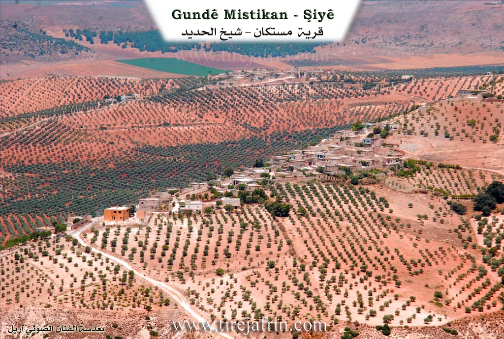
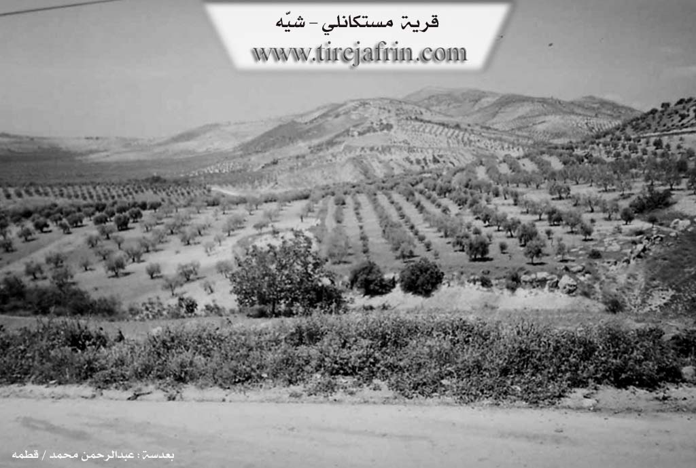

General Information
Nahiya (Subdistrict)
Şiyê
Also Known As
Mastikanli, Mistika, مستكان, مستكانلي
Tribes
Mistikan
Families, Clans, etc.
Elo, Kûlkê, Mistkl, Şaqîno

Photos


Basic Information about Mistika
Source: Tirej Afrin
Etymology: Local proper noun derived from the name Mistefa. The founder of the family and village is Mistefa el Eqre. Mistikan is also the name of a Kurdish tribe that was previously near Reqa.
Foundation Date/Period: Approximately 250 years ago
Summaries
I. Summary from TirejAfrin Site (English) of Mistika
Source: https://www.tirejafrin.com/site/kura%20afrin%20%20%20shiye%20-%20mistika.htm
In the book جبل الكرد (عفرين) دراسة جغرافية Çiyayê Kurmênc (Efrîn): A Geographical Study by د. محمد عبدو علي Dr. Mihemed Ebdo Elî: Mistika, Mistikanlî / 573 inhabitants - 118 houses - 5km - 500m /:
Mistika: A local proper noun derived from Mistefa. There is an old family in the village named Mistkl, and Mistefa el Eqre (Mustafa the Bald) is the name of the founder of the family and the village. Also, Mistikan is the name of a Kurdish tribe that was previously near Reqa (Reference: Mûsilî, p. 455).
It is a small village located on the southern slope of a steep rise towards the valley of Şiyê.
In the book عفرين .... نهرها وروابيها الخضراء Efrîn... Her River and Her Green Hills by the writer عبدالرحمن محمد Ebdulrehman Mihemed from the village of Qetme: Mistikanlî is a village in Çiyayê Kurmênc, affiliated with the Şiyê sub-district, Efrîn area, Heleb governorate.
It is a small village located in the middle section of the western slope of the mentioned mountain, on the southern slope of a steep limestone rise. It overlooks agricultural lands to the west covered by alluvial soil. It is 5km away from the town of Şiyê towards the northeast.
It is bordered to the north by a mountain chain and the villages of Şêx Çeqelî Foqanî and /Şêx Çeqelî/ Tehtanî; to the west by a wide and fertile plain of olive trees and the village of Qermîtliq; to the east by a high and rugged mountain chain planted with forest trees; and to the south by a slope and plain planted with olives and the town of Şiyê and Erende.
The number of its houses is about 35 and its age is about 250 years. Its old dwellings are stone and mud with flat wooden roofs, and the modern ones are cement. An electricity network and a primary school are available, and they drink water from cisterns. Its residents work in rain fed agriculture (olives, legumes, grains) on an area of 188 hectares, with olive trees constituting 85%, and in livestock breeding. It contains an olive press. It connects to the sub district center via the Riya Mistika-Şiyê (Mistika-Şiyê road).
Among the families present in the village are the family of (Elo, Şaqîno, Kûlkê).
Village Mukhtar: Ebdulrehman Îbrahîm
Sources:
- Book: جبل الكرد (عفرين) دراسة جغرافية Çiyayê Kurmênc (Efrîn): A Geographical Study by د. محمد عبدو علي Dr. Mihemed Ebdo Elî.
- Book: عفرين .... نهرها وروابيها الخضراء Efrîn... Her River and Her Green Hills by عبدالرحمن محمد Ebdulrehman Mihemed from the village of Qetme.
Preparation and execution:
- Manager of Tirej Efrîn site: Ebdulrehman Hacî Osman
- 20/12/2013
Foundation/Origin Information of Mistika
Among the families in the village are Alu, Shaqinu, and Kulkah families.
Source: TirejAfrin Site
Possible Village Name Meaning of Mistika
A local proper name derived from Mustafa. In the village there is an old family named Mistkêlê "Mustafa the Bald" and the name is the founder of the family and village. Also "Mistikan" is the name of a Kurdish tribe that was near al-Raqqa.
Source: TirejAfrin Site